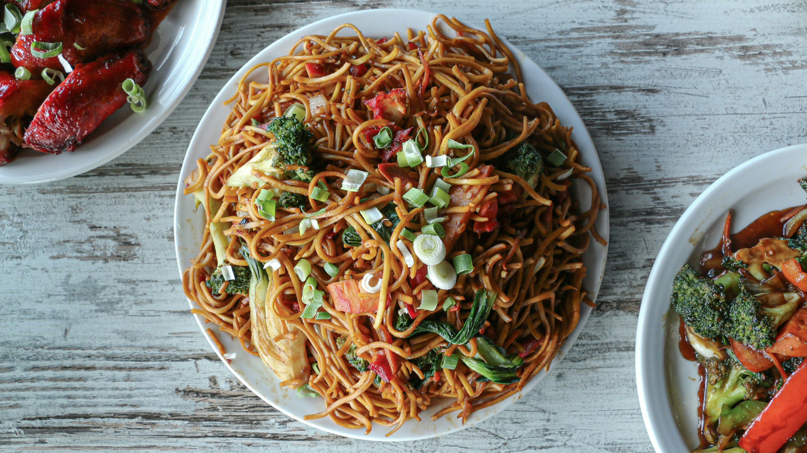

Chicken Chow Mein
Chicken chow mein is a popular Chinese noodle dish made with stir-fried noodles, tender chicken pieces, and fresh
vegetables like capsicum, cabbage, and carrots. It is cooked in a flavorful soy-based sauce that gives it a
savory and slightly tangy taste. Its mix of soft noodles and crunchy vegetables makes it a satisfying and
delicious meal.
Go Back